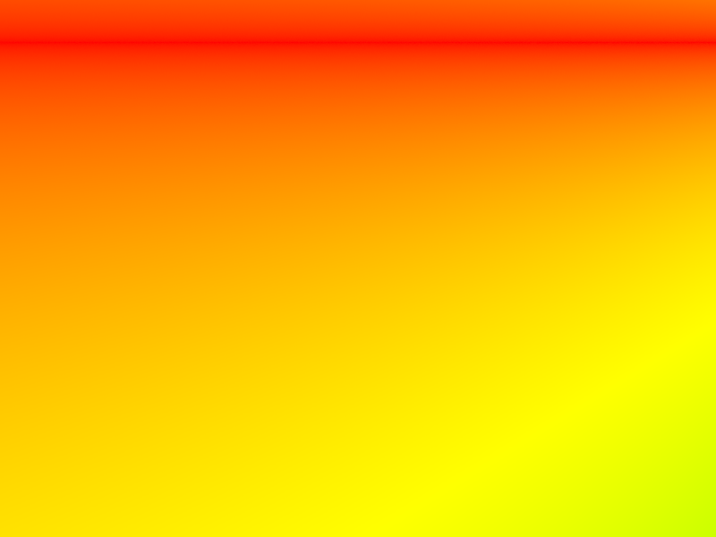

Project 3: PathTracer
CS 284a Computer graphics & Imaging
2022 Spring Kaleab Belete, Xinwei Zhuang Webpage: https://cal-cs184-student.github.io/sp22-project-webpages-xinwei-zhuang/proj3-1/index.htmlPart 1: Ray Generation and Scene Intersection
Ray generation and primitive intersection
Walk through the ray generation and primitive intersection parts of the rendering pipeline. We firstly map pixels from the unnormalized image space to image space, then map image to camera spac. In the camera space, we calculate the orientation (which is the camera's position) and the direction of the ray.


Triangle intersection
Explain the triangle intersection algorithm you implemented in your own words.The workflow works as follows:
- We check whether the ray is intersected with the plane that triangle lies in using Moller Trumbore Algorithm. The equation to calculate t is optimized to $$\vec{O}+t\vec{D}=(1-b_1-b_2)\vec{P_0}+b_1\vec{P_1}+b_2\vec{P_2}$$ $$\begin{bmatrix}t\\b_1\\b_2 \end{bmatrix} = \frac{1}{\vec{S_1}\vec{E_1}} \begin{bmatrix}\vec{S_2}\vec{E_2}\\ \vec{S_1}\vec{S} \\ \vec{S_2}\vec{D} \end{bmatrix} $$ Then we compare this t with the far clip and the near clip with the camera.
- If there's a valid intersection, we update t to be the ray's parameter to the intersection point
- We also calculate the surface normal of the intersection point using barycentric coordinates, and we get the BRDF attributes for material.

Sphere intersection
We do the same for the sphere, with a modification for the calculation for t and surface normal.

Part 2: Bounding Volume Hierarchy
BVH construction and heuristics
Walk through your BVH construction algorithm. Explain the heuristic you chose for picking the splitting point.The BVH algorithm is contructed as follows:
- We get the bounding box
- Initiate a new BVH node with the bounding box and check the number of primitives
- If we have less primitives than the max_leaf_size, we update the start and end iterator and return the node
- If we have more primitives than the max_leaf_size,
- Then split the primitives by middle of the longest axis of the bounding box,
- Assign primitives in the children nodes l and r according to its position,
- Chcek whether right/left node has no primitives assigned. If so, assign the leftmost / bottommost primitive in the left child and the rightmost / topmost primitive for the right child to avoid segfault.
- Return the node

normal shading with BVH acceleration
Show images with normal shading for a few large .dae files that you can only render with BVH acceleration.
Comparison
Compare rendering times on a few scenes with moderately complex geometries with and without BVH acceleration. Present your results in a one-paragraph analysis.We rendered the cow.dae with 8 threads rendering. Without BVH it costs 36.2s with 478848 rays traced. The average intersection tests per ray is 734. Generally, using BVH tree will explosively reduce the amount of time needed for complex geometry.
| - Cow.dae - | Without BVH | With BVH |
|---|---|---|
| time | 36.2s | 0.279s |
| - CBlucy.dae - | Without BVH | With BVH |
| time | 637s | 0.5s |
Part 3: Direct Illumination
Direct lighting
Walk through both implementations of the direct lighting function.We firstly defined the diffuse BSDF function, both uniformly and with specific pdf. Then we implement zero-bounce illumination, Uniform Hemisphere Sampling and Direct Lighting by Importance Sampling.
Direct illumination as the name suggests is when we only consider direct light sources when lighting our scene, we can do this by:
- Implementing the bidirectional scattering distribution function (BSDF), to represent the colors produced in the outwards direction towards an incoming ray only considering uniform scattering and without negative interaction between incoming and outgoing light, by setting our defuse f function to be reflectance over pi and our sample f function to first updating the *wi to get sample over the pdf from the sample then calling f with wo and *wi.
- We can have zero bounce (the light given off by a source) simply equal to the emissions of the intersection bsdf and the one bounce(the light that interacts directly) emulated by either uniform hemisphere sampling or importance sampling based on the given command line input.
- Implementing the uniform hemisphere function, which approximates direct lighting by taking uniform samples around a given point over a hemisphere, by creating an offset ray in the direction of the hit point, checking for intersections with that ray and our bvh, and if an intersection is found updating the outwards lighting by multiplying cos theta of the sample with the emissions of the intersection bsdf and the f of the w out and sample all divided by num_sample/2Pi(Monte Carlo). The result is a grainy image as this function gives equal importance to all possible incoming rays.
- Implementing Importance sampling which approximates lighting by sampling direct light sources instead of sampling a uniformly over a hemisphere. The basic function this time loops over each light in the scene and calls sample L with the hit point, and pointers for a w input vector and distance and pdf doubles. Then we check if the z axis of (w2o * w_in) are positive with cos theta and create a ray in the direction of the of the hit point with our w input, making sure to update the bounds, and then if there is no intersection with the bvh root and the ray we update the light out in a similar way the the uniform case using the new sample method and pdf generated from that sample and feeding our (w2o * w_in) to f instead of the sample. This creates a clearer image as the samples are from the things that are most important (direct light sources) and the final picture better approximates a realistic lighting scenario.
Rendering
Images rendered with both implementations of the direct lighting function.Direct Lighting with Uniform Hemisphere Sampling
Direct Lighting by Importance Sampling Lights
Lighting sampling rendering
Focus on one particular scene with at least one area light and compare the noise levels in soft shadows when rendering with 1, 4, 16, and 64 light rays (the -l flag) and with 1 sample per pixel (the -s flag) using light sampling, not uniform hemisphere sampling.
Comparison
Compare the results between uniform hemisphere sampling and lighting sampling in a one-paragraph analysis.
Part 4: Global Illumination
Implementation of the indirect lighting
Global illumination improves on direct illumination by now handling all light including light from secondary sources which only indirectly contribute light to a point in a scene. To do this we now use an indirect lighting function which we use over of just considering zero bounce + once bounce we no use zero bounce + atleast one bounce.The atleast one bounce function is implemented by
- first setting the L out to a single one bounce then while the given rays depth is not at the max ray depth we use Russian roulette with the coin flip function and an arbitrary cpdf probability and use the sample f function giving it the w out and pointers too a vector w in and a pdf.
- After we create an offset ray along the hit point, update its parameters(making sure to increment the depth), check for a bvh intersection with the ray and if there is an intersection we add to L out by recursively calling the function and multiplying the output of the recursive call by the sample and cos theta of the w in vector dividing by pdf*cpdf.
- At the end we return L out and our base case is triggered when we reach max depth(a ray cant bounce anymore). Russian roulette can do a good job at approximating the lighting output and stopping at an appropriate point where the rays are too deep to adequately contribute to the lighting of the scene.
Images rendered with global (direct and indirect) illumination (1024 sample per pixel)
Pick one scene and compare rendered views first with only direct illumination, then only indirect illumination. Use 1024 samples per pixel. (You will have to edit PathTracer::at_least_one_bounce_radiance(...) in your code to generate these views.)
For CBbunny.dae, compare rendered views with max_ray_depth set to 0, 1, 2, 3, and 100 (the -m flag). Use 1024 samples per pixel.


Pick one scene and compare rendered views with various sample-per-pixel rates, including at least 1, 2, 4, 8, 16, 64, and 1024. Use 4 light rays.


Part 5 Adaptive Sampling
Implementation of the adaptive sampling
We can see that Monte Carlo ray tracing does well in approximating light but it still has has a lot of noise, by selective increasing the sample rate for the given pixels in a scene we can reduce noise while keeping in mind the difficult of a pixel to converge.This is done by updating the ray trace pixel function:
- calculate the sum of the illuminance of each radiance
- calculate the sum of the squared illuminance of each radiance
- calculate the mean and variance of a batch samples
- To reduce the cost, we only perform the convergance on sample batch instead of single pixel. We check if the I (pixel's convergence, based on mean and variable) is converged or not by multiply mean by a max tolerance parameter. If converged, we end the radiance estimation loop.
- We update the sample buffer by the sum of radiance divided by the number of sample.
Render
Pick one scene and render it with at least 2048 samples per pixel. Show a good sampling rate image with clearly visible differences in sampling rate over various regions and pixels. Include both your sample rate image, which shows your how your adaptive sampling changes depending on which part of the image you are rendering, and your noise-free rendered result. Use 1 sample per light and at least 5 for max ray depth.